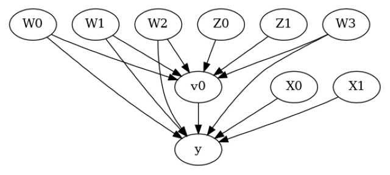

Conditional Average Treatment Effects (CATE) with DoWhy and EconML#
This is an experimental feature where we use EconML methods from DoWhy. Using EconML allows CATE estimation using different methods.
All four steps of causal inference in DoWhy remain the same: model, identify, estimate, and refute. The key difference is that we now call econml methods in the estimation step. There is also a simpler example using linear regression to understand the intuition behind CATE estimators.
All datasets are generated using linear structural equations.
[1]:
%load_ext autoreload
%autoreload 2
[2]:
import numpy as np
import pandas as pd
import logging
import dowhy
dowhy.enable_notebook_rendering()
from dowhy import CausalModel
import dowhy.datasets
import econml
import warnings
warnings.filterwarnings('ignore')
BETA = 10
[3]:
data = dowhy.datasets.linear_dataset(BETA, num_common_causes=4, num_samples=10000,
num_instruments=2, num_effect_modifiers=2,
num_treatments=1,
treatment_is_binary=False,
num_discrete_common_causes=2,
num_discrete_effect_modifiers=0,
one_hot_encode=False)
df=data['df']
print(df.head())
print("True causal estimate is", data["ate"])
X0 X1 Z0 Z1 W0 W1 W2 W3 v0 \
0 -0.715390 0.768809 1.0 0.894595 -0.862126 0.471714 3 1 27.667261
1 -0.565501 0.447075 1.0 0.112685 -1.243673 1.535002 3 0 14.712841
2 0.400989 3.360825 0.0 0.997565 -0.343577 1.560828 1 3 21.371049
3 0.403567 1.309456 0.0 0.838804 0.841669 0.955383 1 1 18.660451
4 -0.086848 -0.155572 1.0 0.168757 -1.642750 -0.887886 1 2 10.919184
y
0 323.639885
1 166.023116
2 442.915324
3 276.107160
4 108.978483
True causal estimate is 11.091161079427925
[4]:
model = CausalModel(data=data["df"],
treatment=data["treatment_name"], outcome=data["outcome_name"],
graph=data["gml_graph"])
[5]:
model.view_model()
from IPython.display import Image, display
display(Image(filename="causal_model.png"))


[6]:
identified_estimand= model.identify_effect(proceed_when_unidentifiable=True)
print(identified_estimand)
Estimand type: EstimandType.NONPARAMETRIC_ATE
### Estimand : 1
Estimand name: backdoor
Estimand expression:
d
─────(E[y|W2,W1,W0,W3])
d[v₀]
Estimand assumption 1, Unconfoundedness: If U→{v0} and U→y then P(y|v0,W2,W1,W0,W3,U) = P(y|v0,W2,W1,W0,W3)
### Estimand : 2
Estimand name: iv
Estimand expression:
⎡ -1⎤
⎢ d ⎛ d ⎞ ⎥
E⎢─────────(y)⋅⎜─────────([v₀])⎟ ⎥
⎣d[Z₁ Z₀] ⎝d[Z₁ Z₀] ⎠ ⎦
Estimand assumption 1, As-if-random: If U→→y then ¬(U →→{Z1,Z0})
Estimand assumption 2, Exclusion: If we remove {Z1,Z0}→{v0}, then ¬({Z1,Z0}→y)
### Estimand : 3
Estimand name: frontdoor
No such variable(s) found!
### Estimand : 4
Estimand name: general_adjustment
Estimand expression:
d
─────(E[y|W3,W1,W0,W2])
d[v₀]
Estimand assumption 1, Unconfoundedness: If U→{v0} and U→y then P(y|v0,W3,W1,W0,W2,U) = P(y|v0,W3,W1,W0,W2)
Linear Model#
First, let us build some intuition using a linear model for estimating CATE. The effect modifiers (that lead to a heterogeneous treatment effect) can be modeled as interaction terms with the treatment. Thus, their value modulates the effect of treatment.
Below the estimated effect of changing treatment from 0 to 1.
[7]:
linear_estimate = model.estimate_effect(identified_estimand,
method_name="backdoor.linear_regression",
control_value=0,
treatment_value=1)
print(linear_estimate)
*** Causal Estimate ***
## Identified estimand
Estimand type: EstimandType.NONPARAMETRIC_ATE
### Estimand : 1
Estimand name: backdoor
Estimand expression:
d
─────(E[y|W2,W1,W0,W3])
d[v₀]
Estimand assumption 1, Unconfoundedness: If U→{v0} and U→y then P(y|v0,W2,W1,W0,W3,U) = P(y|v0,W2,W1,W0,W3)
## Realized estimand
b: y~v0+W2+W1+W0+W3+v0*X1+v0*X0
Target units:
## Estimate
Mean value: 11.091254556031794
### Conditional Estimates
__categorical__X1 __categorical__X0
(-2.892, -0.114] (-4.821000000000001, -1.521] 5.015336
(-1.521, -0.943] 6.279483
(-0.943, -0.457] 6.997859
(-0.457, 0.133] 7.872456
(0.133, 3.253] 9.101420
(-0.114, 0.477] (-4.821000000000001, -1.521] 7.547904
(-1.521, -0.943] 8.807916
(-0.943, -0.457] 9.525397
(-0.457, 0.133] 10.298612
(0.133, 3.253] 11.621460
(0.477, 0.987] (-4.821000000000001, -1.521] 9.064653
(-1.521, -0.943] 10.333930
(-0.943, -0.457] 11.038269
(-0.457, 0.133] 11.835773
(0.133, 3.253] 13.133471
(0.987, 1.582] (-4.821000000000001, -1.521] 10.580156
(-1.521, -0.943] 11.882725
(-0.943, -0.457] 12.628461
(-0.457, 0.133] 13.436551
(0.133, 3.253] 14.634013
(1.582, 4.878] (-4.821000000000001, -1.521] 13.112567
(-1.521, -0.943] 14.288140
(-0.943, -0.457] 15.185662
(-0.457, 0.133] 15.916859
(0.133, 3.253] 17.126991
dtype: float64
EconML methods#
We now move to the more advanced methods from the EconML package for estimating CATE.
First, let us look at the double machine learning estimator. Method_name corresponds to the fully qualified name of the class that we want to use. For double ML, it is “econml.dml.DML”.
Target units defines the units over which the causal estimate is to be computed. This can be a lambda function filter on the original dataframe, a new Pandas dataframe, or a string corresponding to the three main kinds of target units (“ate”, “att” and “atc”). Below we show an example of a lambda function.
Method_params are passed directly to EconML. For details on allowed parameters, refer to the EconML documentation.
[8]:
from sklearn.preprocessing import PolynomialFeatures
from sklearn.linear_model import LassoCV
from sklearn.ensemble import GradientBoostingRegressor
dml_estimate = model.estimate_effect(identified_estimand, method_name="backdoor.econml.dml.DML",
control_value = 0,
treatment_value = 1,
target_units = lambda df: df["X0"]>1, # condition used for CATE
confidence_intervals=False,
method_params={"init_params":{'model_y':GradientBoostingRegressor(),
'model_t': GradientBoostingRegressor(),
"model_final":LassoCV(fit_intercept=False),
'featurizer':PolynomialFeatures(degree=1, include_bias=False)},
"fit_params":{}})
print(dml_estimate)
*** Causal Estimate ***
## Identified estimand
Estimand type: EstimandType.NONPARAMETRIC_ATE
### Estimand : 1
Estimand name: backdoor
Estimand expression:
d
─────(E[y|W2,W1,W0,W3])
d[v₀]
Estimand assumption 1, Unconfoundedness: If U→{v0} and U→y then P(y|v0,W2,W1,W0,W3,U) = P(y|v0,W2,W1,W0,W3)
## Realized estimand
b: y~v0+W2+W1+W0+W3 | X1,X0
Target units: Data subset defined by a function
## Estimate
Mean value: 14.115001990141227
Effect estimates: [[14.57640921]
[14.72936035]
[16.91046516]
[15.47915922]
[14.47680644]
[10.69209052]
[15.65487167]
[13.57858801]
[10.60030247]
[12.25718591]
[18.01365812]
[14.29571655]
[11.77220586]
[12.67108993]
[16.16519086]
[14.21504972]
[10.17134274]
[16.34802055]
[12.68970992]
[15.71597012]
[ 9.63858038]
[ 8.02366331]
[15.45871747]
[12.8310531 ]
[13.54448719]
[14.85017901]
[14.14934161]
[19.49509142]
[11.09634764]
[10.54632625]
[11.20338685]
[12.34819581]
[11.94013469]
[17.16774393]
[16.90965721]
[14.14467075]
[18.85719197]
[13.33324912]
[12.18382755]
[11.16530667]
[18.40844984]
[12.55438272]
[21.56755193]
[19.98529087]
[23.58297352]
[15.71407054]
[11.92732948]
[13.29977146]
[15.5964185 ]
[14.33640817]
[13.0364436 ]
[12.92539368]
[15.2365394 ]
[21.32707277]
[12.56697031]
[16.3949047 ]
[10.39914003]
[15.12197874]
[12.03207607]
[17.13299208]
[18.5127133 ]
[16.97974539]
[19.72637021]
[14.26135939]
[16.98851346]
[13.9683783 ]
[10.80167676]
[ 7.79482173]
[10.40464949]
[11.46799795]
[18.59317554]
[20.30455068]
[14.6895909 ]
[10.59194341]
[14.90517951]
[12.43527037]
[14.37326292]
[16.38957441]
[15.48802785]
[11.9018926 ]
[15.12378637]
[15.21123203]
[15.18169322]
[ 9.31617889]
[14.02347148]
[14.94589867]
[18.93257118]
[13.38652442]
[14.26950681]
[13.17761563]
[13.27116759]
[15.22531803]
[15.75226036]
[17.07243529]
[16.56229973]
[18.24507304]
[12.90527308]
[15.78755252]
[14.12537437]
[18.9120347 ]
[19.46364053]
[10.34557056]
[15.54078582]
[13.23303884]
[15.30165461]
[ 7.46861015]
[17.04199549]
[18.11859376]
[13.5361208 ]
[12.15268974]
[13.71202253]
[13.49362768]
[17.68554788]
[12.24665122]
[12.75876329]
[14.14764115]
[12.38126142]
[12.76564967]
[13.45112263]
[12.40802134]
[13.3165641 ]
[12.58842715]
[16.80712665]
[13.65094486]
[13.9841396 ]
[17.65457394]
[14.54811253]
[10.08254559]
[11.19317115]
[14.49724577]
[12.60414026]
[14.90998948]
[12.78045173]
[16.6761817 ]
[16.87294761]
[ 9.8895279 ]
[15.39656961]
[14.86356303]
[14.98625146]
[15.76803766]
[14.70096914]
[10.10315743]
[14.23913556]
[17.38113159]
[10.49343078]
[13.57295544]
[11.15993438]
[11.08411459]
[ 7.07476569]
[15.71637345]
[13.83846966]
[10.67611527]
[17.26674116]
[11.33871778]
[11.18516367]
[ 5.96003099]
[13.5407321 ]
[17.30790143]
[12.55178627]
[18.25491142]
[10.10082741]
[12.90629864]
[15.70436725]
[17.39273435]
[13.95054518]
[13.14565906]
[14.5005737 ]
[11.17190759]
[17.29192085]
[14.09329896]
[10.71579134]
[14.54062348]
[12.59802657]
[14.75308953]
[16.60948259]
[ 4.58482347]
[13.49087986]
[15.2677246 ]
[13.46403811]
[10.17330245]
[14.93583722]
[15.75435662]
[ 9.50530525]
[10.9330513 ]
[13.94711245]
[15.29163524]
[12.44784212]
[ 9.93758575]
[13.80099533]
[13.98829337]
[10.9157418 ]
[ 9.45167367]
[14.41756431]
[12.84238069]
[18.93599391]
[13.07326377]
[12.24052094]
[12.11316669]
[ 8.54987061]
[16.50465031]
[12.87198635]
[15.2577649 ]
[13.56502801]
[11.52247877]
[18.52740528]
[18.18429753]
[14.71687239]
[15.18249225]
[18.18133084]
[13.09657558]
[14.43329408]
[15.70558539]
[12.07891952]
[14.54303684]
[15.40554057]
[16.82593453]
[14.58506524]
[13.70420327]
[15.75026462]
[15.54508336]
[13.83603902]
[16.09569649]
[20.47781367]
[15.94882801]
[12.25957642]
[18.08844354]
[10.41338359]
[11.2492425 ]
[12.02229987]
[12.06603475]
[15.97948737]
[14.69197836]
[18.14859903]
[16.5584549 ]
[17.96423113]
[ 7.74991796]
[12.74551554]
[17.05914159]
[21.01169945]
[13.54732678]
[14.23931629]
[14.25704167]
[13.82811506]
[10.23055103]
[17.90191733]
[12.44329012]
[13.70871679]
[10.09055349]
[15.14440657]
[15.51550688]
[13.28694719]
[14.94661051]
[12.66714982]
[15.14169098]
[ 9.23783693]
[13.94378527]
[15.98003664]
[12.45309019]
[ 8.68445929]
[11.81918196]
[17.16376815]
[15.60725314]
[11.21771238]
[18.59411572]
[14.55680895]
[10.32236417]
[13.33874343]
[19.12332699]
[11.49578897]
[16.24237155]
[12.54807731]
[17.93235657]
[14.38749222]
[17.73122898]
[ 8.06611476]
[17.3203977 ]
[14.63621729]
[15.94699989]
[22.75466063]
[16.13129534]
[16.81853857]
[12.24288071]
[10.57684974]
[14.21569439]
[12.17378596]
[ 8.73951717]
[16.56886661]
[16.53201989]
[12.22654138]
[11.80450144]
[15.79080683]
[14.51153568]
[10.26983915]
[11.80193458]
[14.40544934]
[14.73712123]
[11.80928484]
[ 9.05495165]
[12.94339483]
[16.96962046]
[17.46175056]
[ 7.63380874]
[14.70352984]
[12.45022733]
[15.6422119 ]
[11.9275607 ]
[12.15585702]
[12.95757127]
[15.88314748]
[11.19500297]
[21.05307925]
[ 9.5445707 ]
[13.65099246]
[11.70869572]
[13.87769988]
[16.71012405]
[15.53303712]
[20.1079528 ]
[17.024619 ]
[12.5594987 ]
[15.79337088]
[13.01729142]
[15.04265923]
[12.33597478]
[19.81516216]
[12.85966013]
[15.72290481]
[14.54444391]
[16.53715552]
[13.44010953]
[15.19136721]
[15.61402195]
[13.98487961]
[12.36889549]
[12.84939794]
[16.27173879]
[14.52702697]
[14.68540295]
[12.12158481]
[10.10763431]
[15.25960664]
[13.08096991]
[10.21215765]
[10.95519234]
[11.86503334]
[14.7886086 ]
[13.27777885]
[17.39892921]
[13.37771133]
[11.32833209]
[12.70060276]
[11.70925648]
[13.52945054]
[16.27927637]
[15.01402271]
[16.80700414]
[15.80506724]
[16.85089654]
[16.76648347]
[15.45646434]
[ 9.35283726]
[11.36861736]
[13.73958375]
[14.21069633]
[14.53346492]
[17.01988809]
[13.66118632]
[13.17042708]
[14.94449054]
[17.05566694]
[15.37285904]
[14.83186092]
[12.1533288 ]
[ 8.92493452]
[15.02130227]
[ 9.38401337]
[14.29253438]
[ 3.74002586]
[13.73019823]
[16.0088294 ]
[16.65776717]
[14.39097474]
[10.63379531]
[12.53746719]
[ 9.51971257]
[12.57459172]
[15.09258175]
[13.2252807 ]
[16.97383061]
[10.69884185]
[16.26336966]
[15.44018016]
[11.7097321 ]
[13.34482375]
[15.06814009]
[12.28414903]
[ 9.92284471]
[14.09988935]
[12.91266439]
[10.89200558]
[13.27602466]
[17.04324768]
[13.34333427]
[18.37989264]
[17.00646575]
[12.85090977]
[16.91502876]
[12.93462485]
[15.68426844]
[15.17452117]
[16.48712493]
[15.76515814]
[17.10494118]
[16.99692573]
[17.28425466]
[13.08739863]
[13.88732834]
[10.04301643]
[17.6194772 ]
[15.65323164]
[13.29688241]
[11.37611945]
[14.96947982]
[13.04267934]
[18.08115479]
[11.77978054]
[12.85651694]
[15.42484039]
[13.79766924]
[14.96061494]
[17.12805059]
[15.50290697]
[19.45196867]
[13.29698796]
[13.63113392]
[14.58049842]
[15.00784629]
[14.46803281]
[14.48215049]
[13.56983236]
[18.18075316]
[15.19766635]
[12.64046 ]
[13.56421423]
[18.52834314]
[10.34285956]
[15.70124614]
[ 9.10147747]
[13.22660506]
[16.51399439]
[12.31053447]
[16.30399003]]
[9]:
print("True causal estimate is", data["ate"])
True causal estimate is 11.091161079427925
[10]:
dml_estimate = model.estimate_effect(identified_estimand, method_name="backdoor.econml.dml.DML",
control_value = 0,
treatment_value = 1,
target_units = 1, # condition used for CATE
confidence_intervals=False,
method_params={"init_params":{'model_y':GradientBoostingRegressor(),
'model_t': GradientBoostingRegressor(),
"model_final":LassoCV(fit_intercept=False),
'featurizer':PolynomialFeatures(degree=1, include_bias=True)},
"fit_params":{}})
print(dml_estimate)
*** Causal Estimate ***
## Identified estimand
Estimand type: EstimandType.NONPARAMETRIC_ATE
### Estimand : 1
Estimand name: backdoor
Estimand expression:
d
─────(E[y|W2,W1,W0,W3])
d[v₀]
Estimand assumption 1, Unconfoundedness: If U→{v0} and U→y then P(y|v0,W2,W1,W0,W3,U) = P(y|v0,W2,W1,W0,W3)
## Realized estimand
b: y~v0+W2+W1+W0+W3 | X1,X0
Target units:
## Estimate
Mean value: 11.032154894279676
Effect estimates: [[11.10524946]
[10.39483651]
[20.17655777]
...
[11.07198781]
[12.68429863]
[ 9.39074489]]
CATE Object and Confidence Intervals#
EconML provides its own methods to compute confidence intervals. Using BootstrapInference in the example below.
[11]:
from sklearn.preprocessing import PolynomialFeatures
from sklearn.linear_model import LassoCV
from sklearn.ensemble import GradientBoostingRegressor
from econml.inference import BootstrapInference
dml_estimate = model.estimate_effect(identified_estimand,
method_name="backdoor.econml.dml.DML",
target_units = "ate",
confidence_intervals=True,
method_params={"init_params":{'model_y':GradientBoostingRegressor(),
'model_t': GradientBoostingRegressor(),
"model_final": LassoCV(fit_intercept=False),
'featurizer':PolynomialFeatures(degree=1, include_bias=True)},
"fit_params":{
'inference': BootstrapInference(n_bootstrap_samples=100, n_jobs=-1),
}
})
print(dml_estimate)
*** Causal Estimate ***
## Identified estimand
Estimand type: EstimandType.NONPARAMETRIC_ATE
### Estimand : 1
Estimand name: backdoor
Estimand expression:
d
─────(E[y|W2,W1,W0,W3])
d[v₀]
Estimand assumption 1, Unconfoundedness: If U→{v0} and U→y then P(y|v0,W2,W1,W0,W3,U) = P(y|v0,W2,W1,W0,W3)
## Realized estimand
b: y~v0+W2+W1+W0+W3 | X1,X0
Target units: ate
## Estimate
Mean value: 11.050133175075626
Effect estimates: [[11.12474728]
[10.40105717]
[20.171997 ]
...
[11.01350069]
[12.66152998]
[ 9.42097135]]
95.0% confidence interval: [[[11.17880089 10.42590507 20.18745829 ... 10.92444803 12.68053741
9.45154665]]
[[11.28977756 10.52873364 20.71198077 ... 11.14738622 12.85596641
9.54112612]]]
Can provide a new inputs as target units and estimate CATE on them.#
[12]:
test_cols= data['effect_modifier_names'] # only need effect modifiers' values
test_arr = [np.random.uniform(0,1, 10) for _ in range(len(test_cols))] # all variables are sampled uniformly, sample of 10
test_df = pd.DataFrame(np.array(test_arr).transpose(), columns=test_cols)
dml_estimate = model.estimate_effect(identified_estimand,
method_name="backdoor.econml.dml.DML",
target_units = test_df,
confidence_intervals=False,
method_params={"init_params":{'model_y':GradientBoostingRegressor(),
'model_t': GradientBoostingRegressor(),
"model_final":LassoCV(),
'featurizer':PolynomialFeatures(degree=1, include_bias=True)},
"fit_params":{}
})
print(dml_estimate.cate_estimates)
[[13.2294633 ]
[12.49700198]
[11.55285386]
[10.43889575]
[12.45610576]
[10.52912894]
[13.78625555]
[12.96543803]
[11.39015454]
[12.51888166]]
Can also retrieve the raw EconML estimator object for any further operations#
[13]:
print(dml_estimate._estimator_object)
<econml.dml.dml.DML object at 0x7f3a9cd70dd0>
Works with any EconML method#
In addition to double machine learning, below we example analyses using orthogonal forests, DRLearner (bug to fix), and neural network-based instrumental variables.
Binary treatment, Binary outcome#
[14]:
data_binary = dowhy.datasets.linear_dataset(BETA, num_common_causes=4, num_samples=10000,
num_instruments=1, num_effect_modifiers=2,
treatment_is_binary=True, outcome_is_binary=True)
# convert boolean values to {0,1} numeric
data_binary['df'].v0 = data_binary['df'].v0.astype(int)
data_binary['df'].y = data_binary['df'].y.astype(int)
print(data_binary['df'])
model_binary = CausalModel(data=data_binary["df"],
treatment=data_binary["treatment_name"], outcome=data_binary["outcome_name"],
graph=data_binary["gml_graph"])
identified_estimand_binary = model_binary.identify_effect(proceed_when_unidentifiable=True)
X0 X1 Z0 W0 W1 W2 W3 v0 y
0 2.047116 2.386416 1.0 -2.591173 1.972751 1.851696 -0.776470 1 1
1 0.151745 2.488541 1.0 -0.724936 0.307530 -0.702998 0.263282 1 1
2 0.366915 1.548378 1.0 -1.741745 -0.448619 0.260017 -0.934470 1 1
3 1.175388 1.857053 1.0 -0.548954 0.228090 0.886109 1.987425 1 1
4 1.372163 3.114423 1.0 -0.860171 2.237779 0.621109 0.991443 1 1
... ... ... ... ... ... ... ... .. ..
9995 -0.179674 0.682644 1.0 -2.030929 0.479530 0.594073 0.361890 1 1
9996 0.382543 0.178023 1.0 -0.577748 0.914598 -1.605833 -0.667489 1 0
9997 0.823511 -0.523249 0.0 -1.644044 -0.929711 1.979489 0.552416 0 1
9998 0.441886 0.894488 1.0 -2.099560 0.476682 2.017212 -1.115832 1 1
9999 0.199418 -0.021328 0.0 -0.419057 0.035128 -0.176391 1.725860 0 1
[10000 rows x 9 columns]
Using DRLearner estimator#
[15]:
from sklearn.linear_model import LogisticRegressionCV
#todo needs binary y
drlearner_estimate = model_binary.estimate_effect(identified_estimand_binary,
method_name="backdoor.econml.dr.LinearDRLearner",
confidence_intervals=False,
method_params={"init_params":{
'model_propensity': LogisticRegressionCV(cv=3, solver='lbfgs', multi_class='auto')
},
"fit_params":{}
})
print(drlearner_estimate)
print("True causal estimate is", data_binary["ate"])
*** Causal Estimate ***
## Identified estimand
Estimand type: EstimandType.NONPARAMETRIC_ATE
### Estimand : 1
Estimand name: backdoor
Estimand expression:
d
─────(E[y|W2,W1,W0,W3])
d[v₀]
Estimand assumption 1, Unconfoundedness: If U→{v0} and U→y then P(y|v0,W2,W1,W0,W3,U) = P(y|v0,W2,W1,W0,W3)
## Realized estimand
b: y~v0+W2+W1+W0+W3 | X1,X0
Target units: ate
## Estimate
Mean value: 0.4659621736400475
Effect estimates: [[0.55832376]
[0.5007201 ]
[0.48582687]
...
[0.45245556]
[0.47310596]
[0.44429711]]
True causal estimate is 0.3518
Instrumental Variable Method#
[16]:
dmliv_estimate = model.estimate_effect(identified_estimand,
method_name="iv.econml.iv.dml.DMLIV",
target_units = lambda df: df["X0"]>-1,
confidence_intervals=False,
method_params={"init_params":{
'discrete_treatment':False,
'discrete_instrument':False
},
"fit_params":{}})
print(dmliv_estimate)
*** Causal Estimate ***
## Identified estimand
Estimand type: EstimandType.NONPARAMETRIC_ATE
### Estimand : 1
Estimand name: iv
Estimand expression:
⎡ -1⎤
⎢ d ⎛ d ⎞ ⎥
E⎢─────────(y)⋅⎜─────────([v₀])⎟ ⎥
⎣d[Z₁ Z₀] ⎝d[Z₁ Z₀] ⎠ ⎦
Estimand assumption 1, As-if-random: If U→→y then ¬(U →→{Z1,Z0})
Estimand assumption 2, Exclusion: If we remove {Z1,Z0}→{v0}, then ¬({Z1,Z0}→y)
## Realized estimand
b: y~v0+W2+W1+W0+W3 | X1,X0
Target units: Data subset defined by a function
## Estimate
Mean value: 12.048833487371114
Effect estimates: [[11.18141652]
[10.48986574]
[20.19217943]
...
[17.76485741]
[11.22109097]
[12.7853913 ]]
Metalearners#
[17]:
data_experiment = dowhy.datasets.linear_dataset(BETA, num_common_causes=5, num_samples=10000,
num_instruments=2, num_effect_modifiers=5,
treatment_is_binary=True, outcome_is_binary=False)
# convert boolean values to {0,1} numeric
data_experiment['df'].v0 = data_experiment['df'].v0.astype(int)
print(data_experiment['df'])
model_experiment = CausalModel(data=data_experiment["df"],
treatment=data_experiment["treatment_name"], outcome=data_experiment["outcome_name"],
graph=data_experiment["gml_graph"])
identified_estimand_experiment = model_experiment.identify_effect(proceed_when_unidentifiable=True)
X0 X1 X2 X3 X4 Z0 Z1 \
0 1.044485 -1.084624 -1.875114 -0.589255 -1.055941 1.0 0.613590
1 -0.336717 0.233643 -2.450049 -0.805859 0.867731 1.0 0.430316
2 -1.504672 -0.814502 0.333751 -0.574480 -1.009144 1.0 0.892997
3 0.535248 -0.800496 0.465662 -0.891369 -0.981131 1.0 0.813265
4 1.266980 0.191694 -0.574033 -0.584739 1.853357 0.0 0.767090
... ... ... ... ... ... ... ...
9995 1.097855 1.624616 -2.321717 -0.363039 -1.155330 1.0 0.813987
9996 1.127956 0.311064 0.132391 -1.766268 1.170131 1.0 0.881108
9997 1.927314 0.181729 -0.435924 0.027130 -1.204871 0.0 0.707100
9998 0.225290 -0.002357 -0.084629 -1.258001 -0.329468 1.0 0.538801
9999 -0.000470 -0.118665 -2.022490 -0.468976 -0.949891 1.0 0.636604
W0 W1 W2 W3 W4 v0 y
0 -0.547558 -1.796612 0.731456 -1.166803 0.329021 1 -7.833374
1 -1.744856 -1.454500 0.298890 0.474046 0.091805 1 4.340932
2 -2.086789 -3.126406 0.649372 -1.136141 -1.871822 1 -14.856724
3 -0.701746 -2.288230 -0.410688 0.813845 -1.370557 1 0.559976
4 -2.451214 -0.360626 1.294818 -2.144437 0.051930 0 -6.943843
... ... ... ... ... ... .. ...
9995 -1.168481 -1.282442 0.821104 -1.651133 0.030965 1 3.891137
9996 -3.520225 -0.516065 -0.248960 -1.966758 0.601998 0 -14.627411
9997 -0.009265 -0.896682 1.521083 -1.445294 -0.519510 1 12.000403
9998 -0.392094 -1.284108 0.851077 -0.815441 0.046011 1 3.726355
9999 -0.164103 -1.211054 1.232301 0.735334 -1.801157 1 5.530255
[10000 rows x 14 columns]
[18]:
from sklearn.ensemble import RandomForestRegressor
metalearner_estimate = model_experiment.estimate_effect(identified_estimand_experiment,
method_name="backdoor.econml.metalearners.TLearner",
confidence_intervals=False,
method_params={"init_params":{
'models': RandomForestRegressor()
},
"fit_params":{}
})
print(metalearner_estimate)
print("True causal estimate is", data_experiment["ate"])
*** Causal Estimate ***
## Identified estimand
Estimand type: EstimandType.NONPARAMETRIC_ATE
### Estimand : 1
Estimand name: backdoor
Estimand expression:
d
─────(E[y|W2,W1,W0,W3,W4])
d[v₀]
Estimand assumption 1, Unconfoundedness: If U→{v0} and U→y then P(y|v0,W2,W1,W0,W3,W4,U) = P(y|v0,W2,W1,W0,W3,W4)
## Realized estimand
b: y~v0+X1+X2+X4+X0+X3+W2+W1+W0+W3+W4
Target units: ate
## Estimate
Mean value: 10.999592342202591
Effect estimates: [[-1.0265121 ]
[ 4.31333104]
[-4.84644516]
...
[12.50529136]
[ 4.30852273]
[-0.87640955]]
True causal estimate is 9.463667068137605
Avoiding retraining the estimator#
Once an estimator is fitted, it can be reused to estimate effect on different data points. In this case, you can pass fit_estimator=False to estimate_effect. This works for any EconML estimator. We show an example for the T-learner below.
[19]:
# For metalearners, need to provide all the features (except treatmeant and outcome)
metalearner_estimate = model_experiment.estimate_effect(identified_estimand_experiment,
method_name="backdoor.econml.metalearners.TLearner",
confidence_intervals=False,
fit_estimator=False,
target_units=data_experiment["df"].drop(["v0","y", "Z0", "Z1"], axis=1)[9995:],
method_params={})
print(metalearner_estimate)
print("True causal estimate is", data_experiment["ate"])
*** Causal Estimate ***
## Identified estimand
Estimand type: EstimandType.NONPARAMETRIC_ATE
### Estimand : 1
Estimand name: backdoor
Estimand expression:
d
─────(E[y|W2,W1,W0,W3,W4])
d[v₀]
Estimand assumption 1, Unconfoundedness: If U→{v0} and U→y then P(y|v0,W2,W1,W0,W3,W4,U) = P(y|v0,W2,W1,W0,W3,W4)
## Realized estimand
b: y~v0+X1+X2+X4+X0+X3+W2+W1+W0+W3+W4
Target units: Data subset provided as a data frame
## Estimate
Mean value: 9.09697220618846
Effect estimates: [[12.63428612]
[16.91317037]
[12.50529136]
[ 4.30852273]
[-0.87640955]]
True causal estimate is 9.463667068137605
Refuting the estimate#
Adding a random common cause variable#
[20]:
res_random=model.refute_estimate(identified_estimand, dml_estimate, method_name="random_common_cause")
print(res_random)
Refute: Add a random common cause
Estimated effect:12.136417936868993
New effect:12.1831912396377
p value:0.24
Adding an unobserved common cause variable#
[21]:
res_unobserved=model.refute_estimate(identified_estimand, dml_estimate, method_name="add_unobserved_common_cause",
confounders_effect_on_treatment="linear", confounders_effect_on_outcome="linear",
effect_strength_on_treatment=0.01, effect_strength_on_outcome=0.02)
print(res_unobserved)
Refute: Add an Unobserved Common Cause
Estimated effect:12.136417936868993
New effect:12.168920716898743
Replacing treatment with a random (placebo) variable#
[22]:
res_placebo=model.refute_estimate(identified_estimand, dml_estimate,
method_name="placebo_treatment_refuter", placebo_type="permute",
num_simulations=10 # at least 100 is good, setting to 10 for speed
)
print(res_placebo)
Refute: Use a Placebo Treatment
Estimated effect:12.136417936868993
New effect:0.001246021069980895
p value:0.457419778456648
Removing a random subset of the data#
[23]:
res_subset=model.refute_estimate(identified_estimand, dml_estimate,
method_name="data_subset_refuter", subset_fraction=0.8,
num_simulations=10)
print(res_subset)
Refute: Use a subset of data
Estimated effect:12.136417936868993
New effect:12.203218333751403
p value:0.044891068006625054
More refutation methods to come, especially specific to the CATE estimators.